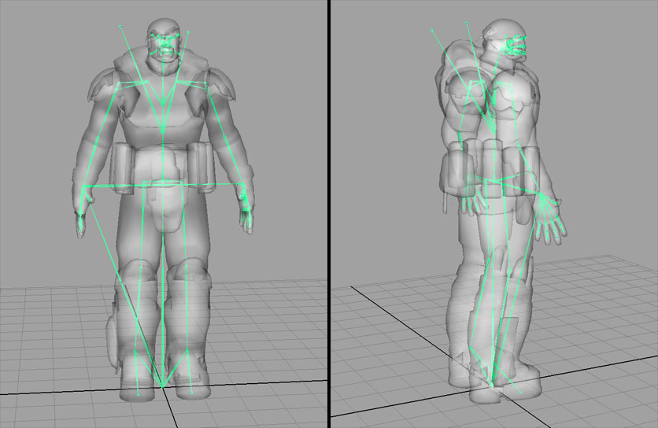
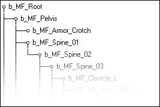
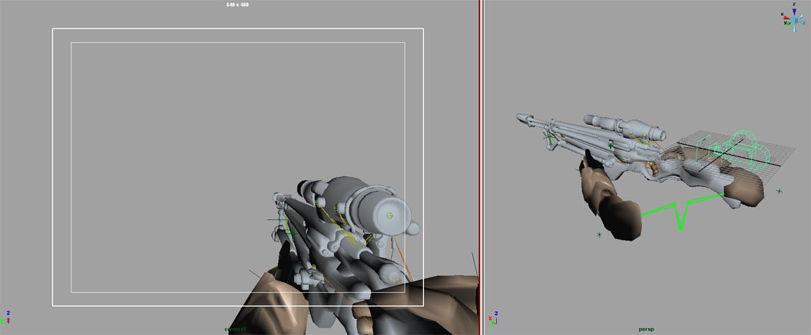
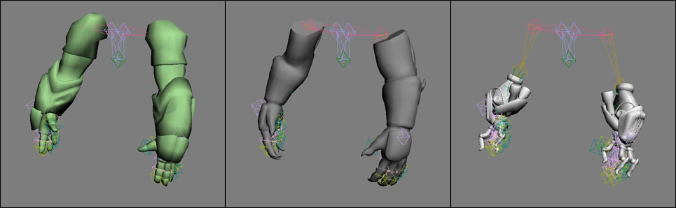
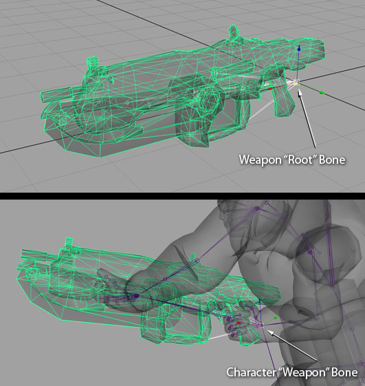
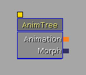
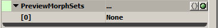
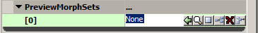
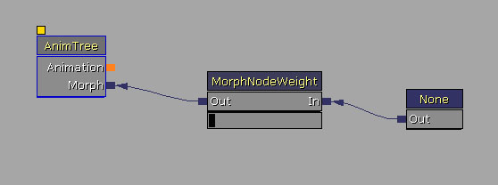

UDN
Search public documentation:
CreatingAnimations
日本語訳
中国翻译
한국어
Interested in the Unreal Engine?
Visit the Unreal Technology site.
Looking for jobs and company info?
Check out the Epic games site.
Questions about support via UDN?
Contact the UDN Staff
中国翻译
한국어
Interested in the Unreal Engine?
Visit the Unreal Technology site.
Looking for jobs and company info?
Check out the Epic games site.
Questions about support via UDN?
Contact the UDN Staff
UE3 Home > Animation > Creating Animations for the Unreal Engine
UE3 Home > Animators > Creating Animations for the Unreal Engine
UE3 Home > Animators > Creating Animations for the Unreal Engine
Creating Animations for the Unreal Engine
Overview
This document will serve as a starting point for identifying the different types of art assets that are used in animation creation for the Unreal Engine content pipeline.
Development Tools
Modern 3D content creation packages such as 3DSMax and Maya support FBX. Unreal Engine 3 supports FBX importing and exporting natively.
Characters
Character Setup and Rigging
Character models should be created in a fairly neutral pose, usually in a “T-Pose”, but it is okay to pose the joints in a relaxed, natural position. The bone structure should be a single hierarchy of bones, mimicking the human skeleton, posed to fit within the character mesh, and parented under a main “root” bone placed at the origin. Although the Editor can import skeletal meshes created with the Y-Up axis orientation, we prefer to work with Z-Up in all 3D Packages. This makes things consistent across the board and allows us to transfer meshes and animations between Max and Maya with no axis issues. With Z-Up being the standard, the characters should be modeled and rigged facing down the +Y axis in Max, or the –Y axis in Maya. (This axis is flipped between the two packages). In the Editor we apply a rotation offset to the characters to make them face the +X axis in the Editor.  The skeleton can also contain extra bones weighted to parts like cloth, armor or hair, and can also contain bones to be used just as attachment points, such as weapon bones or IK bones. It’s best to keep your character animation rig completely separate from the skeletal hierarchy. Adding locators and nodes within the skeletal hierarchy can cause issues when exporting. If multiple characters are modeled and proportioned to fit around the same skeleton, these characters can then share animation sets, reducing the amount of animations needed. Even characters with slightly different proportions can usually share animations. Technical note:- The maximum number of mesh-influencing bones in a skeleton is 75.
- The maximum number of total bones in a skeleton is 256.
- For the mesh, the maximum number of bone influences per vertex is 4. (Upon import, any vertex that is influenced by more than 4 bones will have its lowest influences removed and normalized among the remaining 4 influences for that vertex.) Note that there is a cost based on the max you use for a particular LOD. So if you can get away with using no more than 3, it will be faster. We generally try and use just 1 for LOD 1 and below.
Bones Hierarchy
Having a root bone separate of the pelvis is important. It doesn't matter that much where it is, although it may make things a bit more complicated for certain things. We find it easier to make sure animations will work together when the root is at the feet and origin. If it's somewhere up in the air, it's harder to detect when animations won't chain/blend properly and create a visible pop. For example, when doing root motion animations where Marcus climbs up something, it is easier to visualize where the root bone should be put because it should be where his feet are going to be touching the ground. For IK, we use IK Bones for the feet and hands, direct children of the root bone. This eliminates position/rotation errors when blending animations with a long bone hierarchy. Depending on the animations involved, the location of weapon bones in the hierarchy always has pros and cons. Most of the time our characters are holding guns so it makes sense for them to be children of the hand since no matter how heavily we compress the animations or how low of a framerate we animate at, the gun will maintain a solid position in the hands. The disadvantage is when weapons have to leave the hand. During certain reload animations like the sniper rifle, or when holstering the gun, you might get a lot of fighting between the bones and need to have a higher framerate so it isn't noticeable. Since those types of animations are rare in our case, we decided that having them as children of the hands would give us the best memory savings. If we were animating a bunch of melee weapons where they are constantly spinning them around or something, we would have have chosen to put the weapon bones higher in the hierarchy, maybe even as children of the root. The weapon end bones were a put in as a way to change the pivot points of the guns to the center, but still have all of the animations look correct without having to change the weapon bone position in all the animations and then re-export them. There are some minor rig advantages with animating, but it would be better not to have them at all. It was a change that had to happen when we finished how mirroring animations worked without much time to get it implemented. It can be useful to reduce foot sliding. When you blend 2+ animations with a long hierarchy of bones you may get some errors; IK on the feet was a way to ensure the feet would remain at the right place. This was quite noticeable in directional blends. We did keep it on for much larger creatures, like the Brumak boss fight in Gears of War (PC). The armroll bones - direct children of the upper arm bones - are there just to twist half the amount of the upperarm bone to help the verts deform better. This works better in-game than having roll bones going straight down the arm in the hierarchy, so that way we can still have a two jointed arm for working with IK. Character Export
Once the character mesh is bound to the skeleton and properly weighted in your 3D package, it can be exported as a FBX file which is natively supported in the majority of 3D content creation packages. See the FBX Skeletal Mesh Exporting page for more information.Character Import and Setup
See the FBX Skeletal Mesh Importing page for more information.Weapons
First Person Weapon Setup and Rigging
1st Person weapons are the weapons you see yourself holding in-game. Since they are placed very close to the player's view, and are usually in the view a majority of the time, the models are usually much higher poly, and have much higher resolution textures on them. Tip: Since the 1st person weapon is usually only seen from one side, the model can be optimized by removing any polygons or objects that are never seen by the viewer (usually on the front/right side of the model.). Only optimize the model after the final animations are complete, so you know which parts are never seen. In your 3D package, place a camera at the origin and align it down the +X axis. This will represent the in-game view of the player. Position the 1st person weapon mesh in front of this camera view as it would be seen in-game. Adjust the camera FOV and mesh position to get the desired look. Technical note: The 1st person models are displayed with a different rendering pass, so view offsets and FOV changes can be made that only affect the 1st person objects without affecting the entire scene view. Work with a programmer to adjust the FOV, view offset, and clipping planes for 1st person items. The first major decision when setting up 1st person weapons is whether you will be able to see your own arms. The decision to have 1st person arms in view can add levels of complexity to the setup. On top of that, the decision to have multiple types of arms (male, female, robotic, creature, etc) with each weapon, adds yet another level of complexity.  1) 1st person weapon only. No 1st person arms. This is the least complex option and only requires the rigging and animation of the weapon. The weapon should be bound to a heirarchy of bones. This bone structure should be parented under a “root” bone that remains at the origin. Animate the weapon from the point of view of the camera at the origin. Once the animations are complete, export the skeletal mesh and animations as separate FBX files. 2) 1st person weapon and 1st person arms, but no arm variants. If all characters have similar arms, and you only require one model of the 1st person arms, the arms and weapons can be part of a single skeleton. This single skeleton should be parented under a “root” bone that remains at the origin. Animate the weapon and arms from the point of view of the camera at the origin. Once the animations are complete, export the weapon and arms meshes together as a single FBX file, and export the animations as separate FBX files. 3) 1st person weapon and multiple variations of 1st person arms. If your characters are vastly different, and you require multiple 1st person arm meshes that need to work with each weapon, you will need two separate skeletons, one for the weapon, and one for the arms. Each skeleton needs to be parented under its own “root” bone at the origin of the scene. From a modeling standpoint, all arm mesh variants should be modeled in the same pose with the same proportions and bound to the same skeleton. You will export out each arm mesh variant into individual FBX files, and separately export out each weapon mesh into individual FBX files; and then import them into Unreal Editor. These individual arm skeletal meshes will then be able to share a single AnimSet. Once you’ve animated the weapon and arms together in your 3D package, bake out the animations and remove the constraints between them. Save this file but rename it as an “ExportReady” version, so you have a version with both skeletons. Delete the arms skeleton and export the weapon animations as a FBX file. Reopen the “ExportReady” file with both skeletons. Now delete the weapon skeleton and export the arm animations with the same animation names and frame ranges, but into a different FBX file. Import each FBX into their own AnimSets. You will end up with an Arm AnimSet and a Weapon AnimSet for each weapon. In-game, the weapon skeletal mesh and the arm skeletal mesh will be put back together and play synchronized animations, and any Arm skeletal mesh will then be able to play the animations from any Arm AnimSet. Tweaking in the Engine
It’s best to work with a programmer to get the 1st person weapons and arms working in game with the correct camera FOV, loading the correct arm mesh variant, and get the weapon and arm animations synchronized. Since the animations were based on the origin of the scene, no offset should be needed to get them in view. You can either apply offsets to the mesh, or a programmer can hard-code offsets if they need some slight tweaking.Third Person Weapon Setup and Rigging
3rd person weapons are the weapons you see other characters holding. To setup a 3rd person weapon model, it should first be bound to its own small hierarchy of bones and exported as a skeletal mesh. The weapon’s “root” bone should be positioned so that when it is constrained to the character’s “weapon” bone, the weapon lines up properly in the character’s hands. In your 3D package, animate the character and weapon together in the same scene with the weapon’s “root” bone constrained to the character’s “weapon” bone. You will eventually export out two separate but synchronized animations. One for the weapon and one for the character.  To animate the weapon and character together, such as a reload animation, bring the rigged character and weapon into the same scene, and constrain the weapon’s “root” bone to the character’s “weapon” bone. You will eventually export out the weapon and character as two separate, but synchronized, animations. Animate the character and weapon as you desire, using constraints to keep hands locked to weapon parts or vice versa. Once this character-plus-weapon animation is ready, bake the animation out onto both skeletal hierarchies, and remove all constraints between them. Remove all animation keys from only the weapon’s “root” bone, and set it’s position and rotation values to <0,0,0>. This will retain animation on all the animated weapon bits, but keep the weapon at the scene’s origin. Save this file but rename it as an “ExportReady” version.Weapon Export
Open your "Export Ready" file containing the baked animations for the weapon and the character. Delete the character skeleton and mesh from the scene, and export the weapon animation as a FBX file. Reopen the “ExportReady” file with both skeletons, and this time delete the weapon skeleton and mesh. Export the character animation with the same animation name and frame-range, but into a different FBX file.Weapon Import
In Unreal Editor, import the character’s FBX file into the character’s AnimSet, and import the weapon’s FBX file into the weapon AnimSet.Tweaking in the Engine
Work with a programmer to constrain the weapon skeletal mesh to the character’s “weapon” bone during gameplay. This may require the creation of a Socket onto the character’s “weapon” bone. When the animation is then played on both the character and weapon, they should be synchronized.Morph Targets
Morph Target Setup
Morph Targets (also known as Blend Shapes) are used to change the shape of a mesh, or part of a mesh by offsetting a group of vertices. This vertex deformation can be a good alternative when bone deformation will not suffice. Morph Targets can have many applications, including facial animation, muscle simulation, or even vehicle damage.Morph Target Export
For use in Unreal Editor, Morph Targets can be exported together with Skeletal Meshes in a single FBX file and imported into Unreal Editor all in one go. Or if it is preferred, you may also export them individually and import them in individually. See the FBX Importing Morph Targets page for more information. Morph Note: All morphs should be exported from, and imported into, the same mesh to ensure that the vertex order remains the same. Importing a morph onto a mesh with a different vertex order will most likely cause problems. Be sure not to move the mesh, or change the skeletal bind pose when exporting each morph. Re-importing the source skeletal mesh can also cause vertex order problems and may require re-importing the morph targets.Morph Target Import and Setup in the Editor
See the FBX Importing Morph Targets page for more information Technical Note: When importing new morphs, the editor compares vertices, in vertex order, between the imported PSK and the source skeletal mesh, and finds the ones where the positions have changed, and only saves data for the vertices that have moved. To connect the morph targets to your skeletal mesh, open the AnimTree for your skeletal mesh. This will open the AnimTree Editor. In the AnimTree Editor select the AnimTree node.  You first need to connect the AnimTree to the MorphTartetSet you created. In the Properties section, expand the "Preview Mesh List" properties. Then add an item in the Preview Morph Sets. Expand the "Preview Morph Sets" list.  With the AnimTree Editor window open, go back to the Content Browser and select your MorphTargetSet. Then come back to this AnimTree Editor window and click on the green arrow to add the selected MorphTargetSet to the Preview Morph Set list.  Now you must connect the individual morphs to the AnimTree. Click on a blank area of the AnimTree Editor window to display a list of nodes. Select "MorphNodeWeight" to create that node. Right click again on a blank area, and select "MorphPose" to create that node. Link the morph nodes and the animtree as shown.  Select on the MorphPose node and, in the properties section, enter the name of an existing morph in your MorphTargetSet. You should now be able to drag the value bar below the MorphNodeWeight node and see the Morph blend in and out in the 3D window. Rename the MorphNodeWeight node. The name of the MorphNodeWeight node will be used through Matinee or by a programmer to apply the morph in-game. To quickly duplicate this tree, and add more morphs to the AnimTree, select both the MorphNodeWeight node and the MorphPose node and press Ctrl+W to duplicate the nodes and links. Change the morph name in the new MorphPose node, and rename the MorphNodeWeight node.Faces
For information on setting up FaceFX, please see the Introduction to Face FX page.
Vehicles
For information on setting up and rigging vehicles, please see the Setting up Vehicles page.
Cameras
For information on setting up and rigging cameras, please see the Setting up Cameras page.
Editor Tools
Content Import and Setup in the Editor
See the FBX Skeletal Mesh Importing page for more information about importing skeletal meshes into Unreal Engine 3. To view and edit this mesh, double click on it within the Content Browser. This will open the AnimSet Editor window. This window is used to modify AnimSets, Skeletal Meshes and Morph Targets.Animation Set Editor
See the AnimSet Editor User Guide for more information.Animation Tree Editor
See the AnimTree Editor User Guide for more information.
PhAT
See the Physics Editor User Guide for more information.
Motion Capture
This section will discuss Epic’s particular motion capture equipment and pipeline. But keep in mind there are many types of motion capture systems on the market. Each type has its advantages and disadvantages. Use the system that will work best for you. Whatever motion capture system or pipeline you use, the final animation must be exported from a 3D Package such as Max, Maya or Softimage, using the ActorX exporter, in order to be imported into the Unreal Editor. We use a Vicon MX system. This is a “Passive Optical” system which tracks reflective markers attached by velcro to the actor. Our system has 36 cameras arranged fairly evenly throughout the room. We also record synchronized reference video at the same time. Our motion capture pipeline is as follows:
- Calibrate System
- Capture the movement.
- Clean marker data with Vicon IQ or Blade.
- Target on to characters in Motionbuilder.
- Polish animation in Max or Maya.
- Import into the Unreal Editor using ActorX.